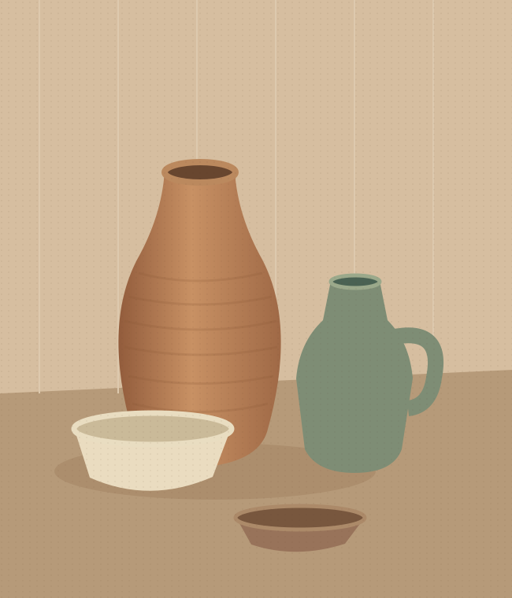

£75 / PERSON
Wheel Throwing
2 hours · Up to 6 people
Centre the clay, open the form and throw your first pot. Make two or three pieces for firing.
HANDMADE CERAMICS & POTTERY WORKSHOPS · MARGATE
A little clay. A little time.
Something entirely your own.
Handmade ceramics and intimate pottery workshops. Thrown, hand-built and glazed in our Margate studio.
Charlotte Reid · Margate Old Town · By appointment

A PLACE TO BEGIN
No perfect pots required. Just curiosity, comfortable clothes and hands ready to get messy.
2 hours · Up to 6 people
Centre the clay, open the form and throw your first pot. Make two or three pieces for firing.
2 hours · Up to 8 people
Pinch, coil and build by hand. A slower, tactile way to turn an idea into a vessel.
1 hour · Existing pieces
Explore colour on studio bisqueware. Contact us before bringing outside clay for firing.
THE COLLECTION
Useful things.
Beautiful, small differences.
Bowls, mugs, plates and platters for everyday rituals.
Vases, jugs and storage jars. No two quite alike.
One-off forms, wall pieces and quiet statements.
Collection enquiries open your email app. No online checkout or claimed live stock.
CHARLOTTE REID / POTTER & FOUNDER
Every piece is made in my Margate studio. Thrown, trimmed, dried, bisque fired, glazed by hand and kiln fired. No shortcuts. Just clay, time and hands.
I came to ceramics from graphic design. I wanted to make things you could hold. Things that become part of the day.
Artist narrative from the fictional studio brief.
MAKE A LITTLE SPACE
No sample sessions match.
January / February 2027 demonstration schedule. Spaces are illustrative, not live availability. Gift voucher enquiries: email the studio ↗
COMMISSIONS & BESPOKE WORK
A tableware set. A gift with a story. A form that does not exist yet. Every commission starts with a conversation.
Allow around 6–8 weeks from sign-off. Single pieces from £150, tableware sets from £350. Timing and final prices are confirmed individually.
Enquire about a commission ↗